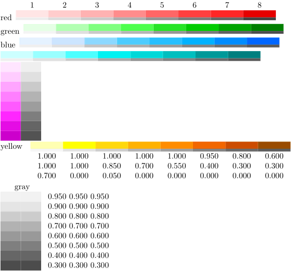

Contents
Summary
The command
\showcolorgroup
is used to visualize a colorgroup.
Settings
| \showcolorgroup[...][...,...] | |
| [...] | name |
| [...,...] | horizontal vertical number value name |
| Option | Explanation |
|---|---|
| horizontal | display horizontally |
| vertical | display vertically |
| number | print color number above/before colorgroup cell |
| value | print rgb value after/below colorgroup cell |
| name | print name before/above colorgroup |
Description
Display the contents of a colorgroup, and its accompanying grayshades.
Examples
Example 1
-
% Use the predefined 'dem' (demo) colorgroups \usecolors[dem] \showcolorgroup[red][name,number] \showcolorgroup[green][name] \showcolorgroup[blue][name] \showcolorgroup[cyan][horizontal] \showcolorgroup[magenta][vertical] \showcolorgroup[yellow][name,value] \showcolorgroup[gray][vertical,name,value]
- 